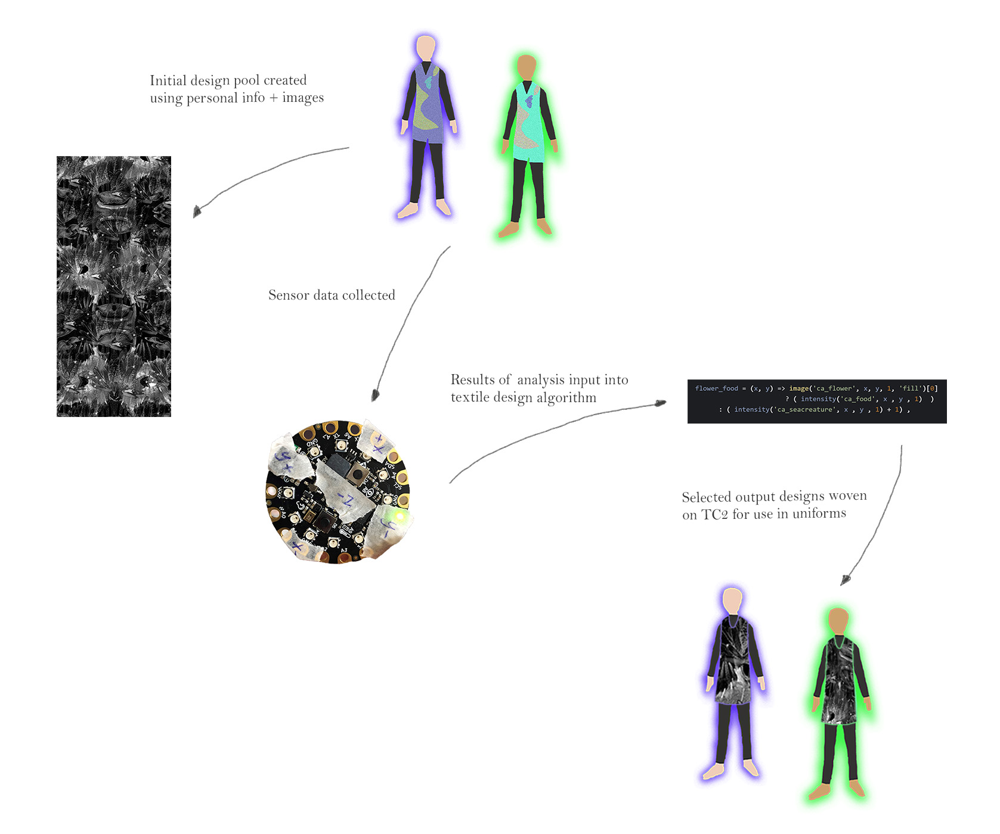
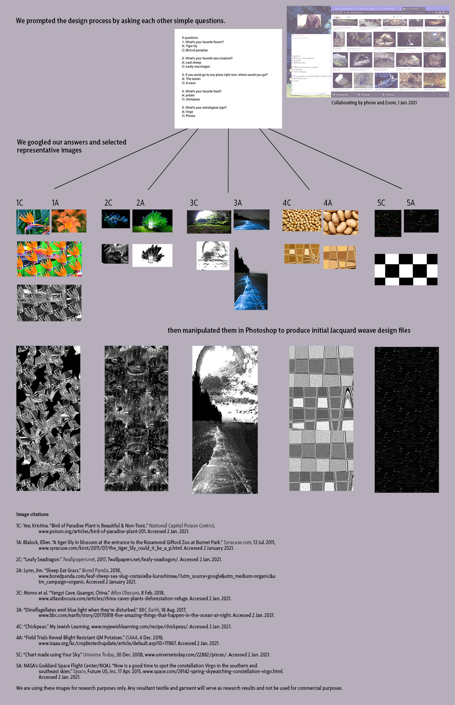
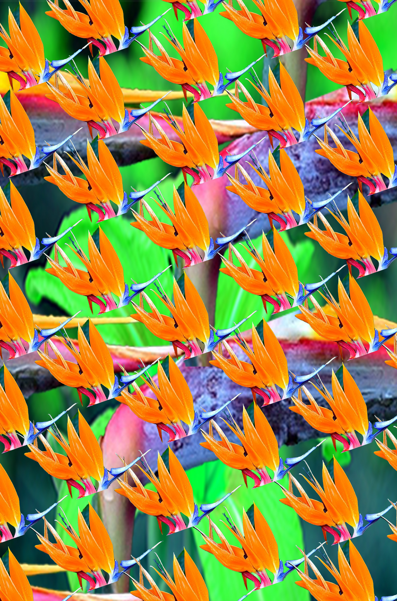
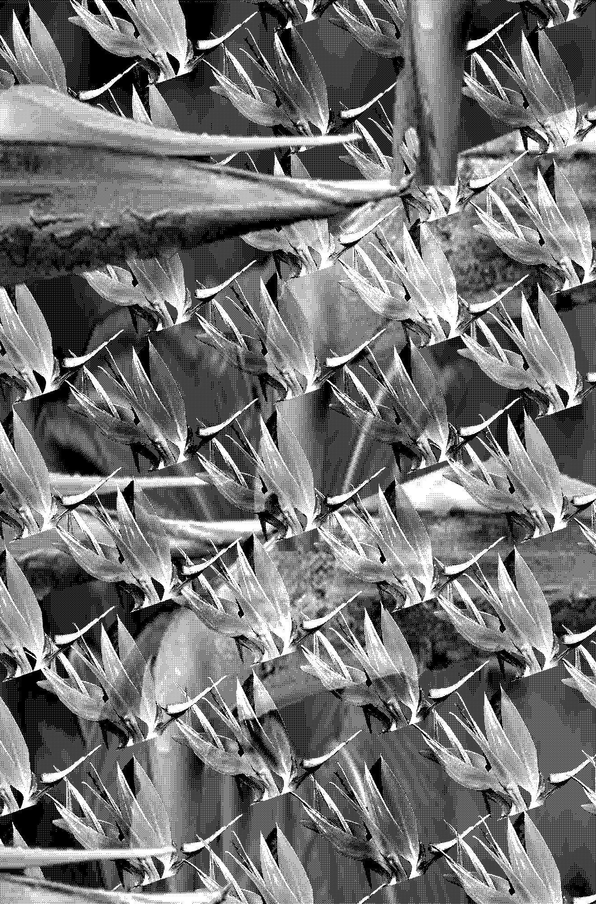
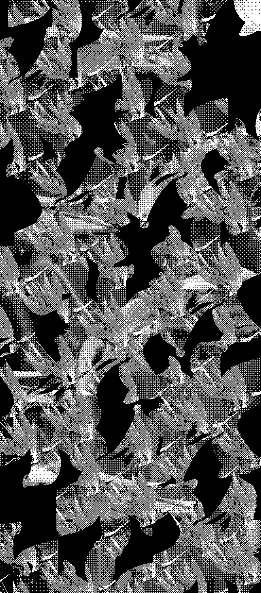
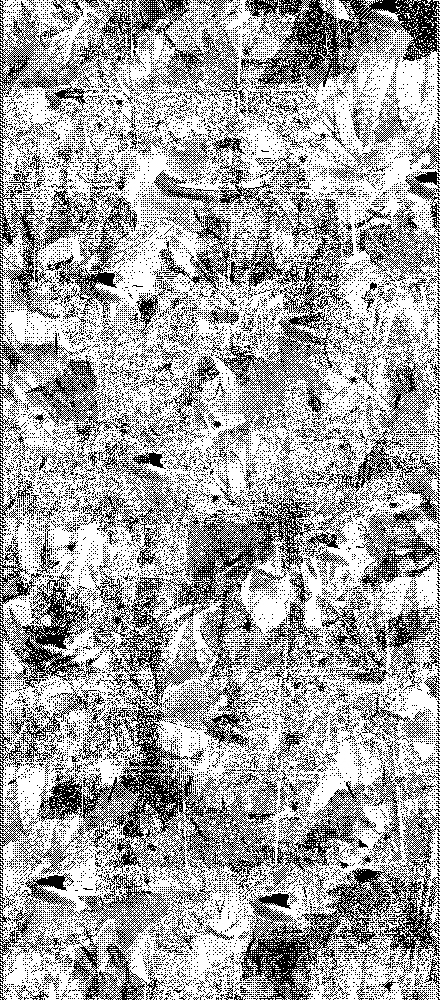
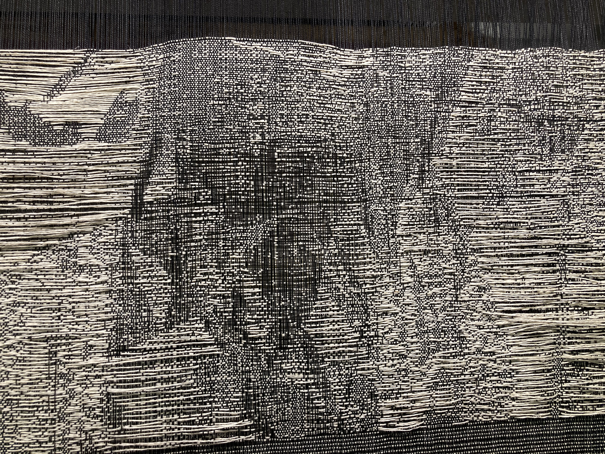
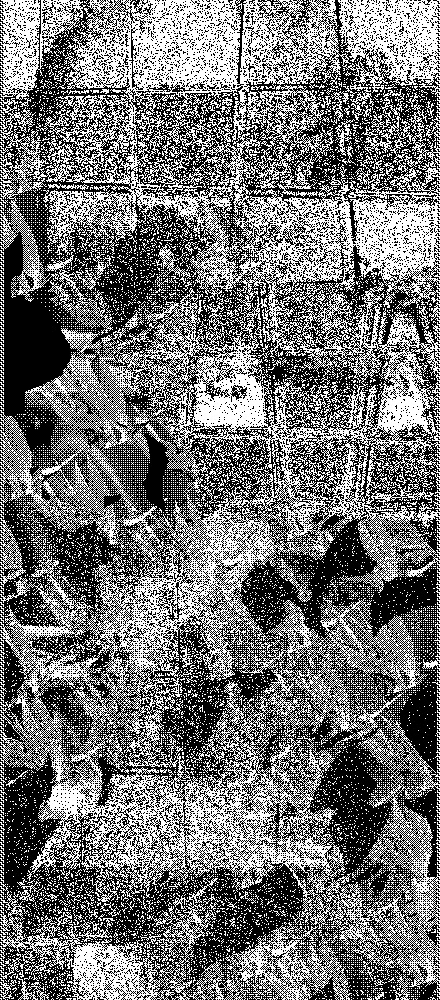
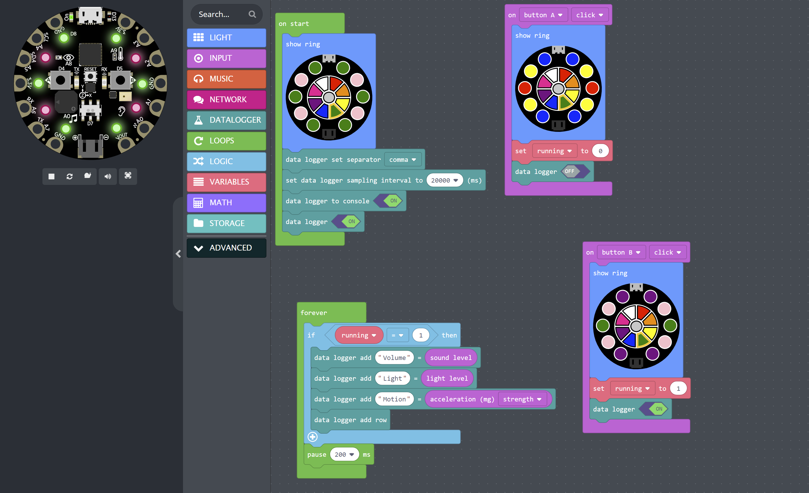
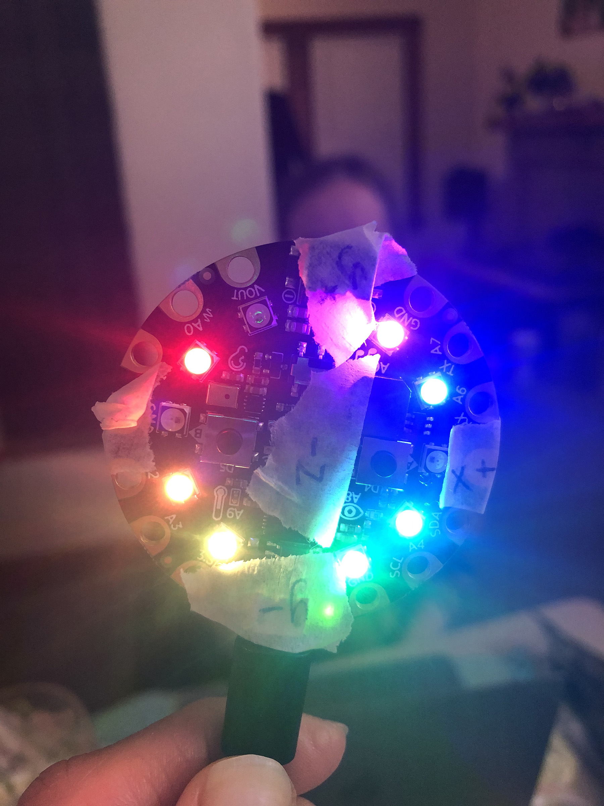

2. Research + Design
Equipment:
Circuit Playground Express board x 2 (Adafruit)
TC2 Jacquard Loom (Digital Weaving Norway)
Mercerized cotton yarn, black 20/2 (warp)
Linen yarn, cream, 20/2 (weft)
Power mesh, black x 5 yd
Photoshop (Adobe)
MakeCode (Microsoft)
aeiyou open-source weave draft software
Collaborator Anna Routson and I develop a garment design and production system using data from the everyday life of the wearer.
After generating initial designs based on answers to personal questions, we modulate design parameters using an algorithm with
inputs of volume, light, and accelerometer data captured from wearable sensor boards. The algorithm outputs design files that
vary from the original according to user data. Select files are hand woven on a TC2 Jacquard loom and constructed into seasonal garments.
The relationship of garment to wearer inspires its long-term use as a uniform, in turn encouraging decreased consumption of fast
fashion garments and textiles. By integrating the life of the wearer into textile design, the distinction between consumer and designer begins to dissolve.
Keywords: data-assisted design, algorithmic design, digital weaving, textiles, distributed making
Intro + objectives
Garments are a person’s second skin. Material, structure, and shape coalesce, reflecting the wearer’s choices as a result of lifestyle, preferences, values, and surroundings. The data-assisted design system developed in this project makes this relationship explicit in the textile. As a person’s life conditions change, the textile design algorithm can output new instances of an initial design to reflect those changes.
The design system need not be limited in application to textiles and fashion, though we choose to focus on them in the scope of this project. The principles can be applied to any material and design process. The advantage of using a data-assisted design system is that the autonomy of the human being is preserved. Support structures of data analysis methodology and algorithmic data processing are built with the sensitivity of humanity in mind, carrying a critique of widespread data-harvesting and deterministic advertising practices.
Through the synthesis of designer, data analyst, craftperson, wearer, and researcher roles, Anna and I present an alternative to the global fashion industry standard of creator-led fashion. Whereas prominent fashion houses today are largely led by artistic directors whose ideas determine the aesthetic outcomes of garments produced downstream, we envision a ground-up alternative that privileges the circumstances of the wearer and “recipient” of the design as the meaningful variables in the design outcome.
Further, the garments produced as a result of the data-assisted design process are meant to be worn as uniforms; that is, repeatedly and for a long time. Because the textiles are handwoven using quality yarns, their craft and aesthetic value is high. In the landscape of mass-produced garments and fast fashion, these garments stand out not only for their design but also for their durability and beauty.
The project objectives are:
- to apply a nascent design philosophy to one industry and mode of production,
- to offer an alternative vision to the dominant narrative of garment design and production,
- to engage in an experimental and synergistic method of working with data and weaving technologies.
The primary questions we pose are:
- How can art, design, and life be merged so that distinctions between designer, maker, and consumer dissolve? What does collaboration look like under these circumstances?
- How can data-assisted design processes catalyze people versed in traditional craft to develop forward-looking structures for design thinking?
- Can data collection from individuals be made for poetic and liberating purposes? Can we humanize the use of data?
The presentation of this project will consist of a multimedia exhibition of garments and textiles. Anna and I will wear the finished garments
in a live show that combines elements of a runway show, art exhibition, and choreographed performance. The research and development process can be
shown in the form of digital design files on monitors, printed design files, video and audio recordings, stations where viewers can interact with
the textile design algorithm code, and sensor board data collections demos. Programming in the form of interactive workshops where participants
develop their own data-assisted design systems for textiles and other materials could be organized.
The project will be open-source: all files and documentation will be publicly accessible via cloud-based storage.
Timeline
Phase I: Groundwork (Oct. 2020 – Jan. 2021)
- Conversations about design philosophy
- Generate initial designs
- Develop aeiyou textile design algorithm and investigate possible data inputs from sensor board
- Select materials for the undergarment, set fabric pattern and sensor placement
- Select weaving yarns and sample initial textile designs for sample weaving.
Phase II: Structure (Feb. – Aug. 2021)
- Develop methods for working with data collected from sensor boards, including sample rate and quantitative analysis suitable for inputs into aeiyou algorithm
- Iterate on and finalize aeiyou algorithm
- Finalize uniform design, calculate cloth requirement and cutting pattern
Phase III: Production (Sep. – Dec. 2021)
- Run data collection and input results of analysis into aeiyou algorithm
- Weave selected textile designs on the TC2 and construct first uniform instance
- Repeat data collection and algorithmic output for additional uniform instance, showing evolution
Phase IV: Presentation (Jan. – Mar. 2022)
- Determine venue and format of presentation
- Prepare project documentation and files for public release
Phase V: Community Networking (Apr. 2022 – May 2023)
- Prepare documentation of data-assisted design process
- Train designers, hand weavers, and artists in data-assisted design and invite them to enact data-assisted design procedures and share their results.
Read the full project proposal and documentation-in-progress here.

Flow chart of steps in the data-assisted design system.

Visual layout of documentation from Phase 1.

Representative of initial design pool, process shot (bird of paradise sliced and repeated)

Previous design file indexed to B&W for TC2 Jacquard

Previous file applied as fill pattern to container pattern (bird of paradise into tiger lily)

One of the initial designs sampled on the TC2.

Previous design woven into cloth on the TC2.

A second design sampled on the TC2.

MakeCode code block for sensor board data collection. MakeCode’s visual layout and ease of use makes it a useful tool for disseminating data-assisted design procedures to others.

Programming and getting familiar with our Circuit Playground Express boards.